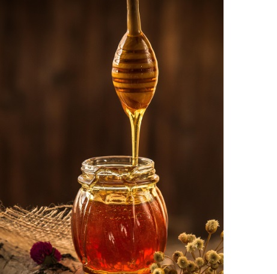
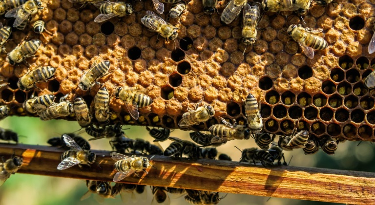
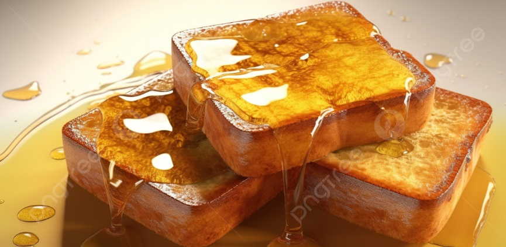

Sobre nuestra miel
La miel natural es recolectada de colmenas locales, garantizando pureza y sabor auténtico.



La miel natural es recolectada de colmenas locales, garantizando pureza y sabor auténtico.


